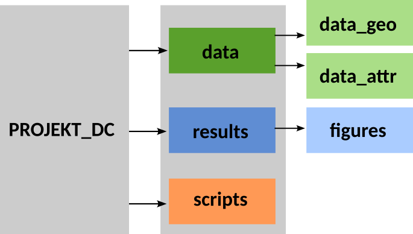

15 Organizacja projektu
15.1 Założenia projektu
Celem ćwiczeń jest przeprowadzenie analizy zróżnicowania przestrzennego oraz zmienności czasowej rasowo-etnicznej struktury ludności wybranego hrabstwa w Stanach Zjednoczonych w latach 1990-2020 oraz przedstawienie wyników w postaci posteru oraz prezentacji multimedialnej.
Ćwiczenia mają na celu wykształcenie następujących umiejętności:
- realizacja projektów grupowych;
- dobór materiałów do form prezentacji (poster, prezentacja multimedialna, raport pisemny);
- wykonywanie analizy danych oraz wizualizacji w środowisku R (w tym implementacja własnych funkcji pozwalających na obliczanie np. miar segregacji rasowej).
Podczas ćwiczeń realizowany będzie jeden projekt pt. “Analiza i wizualizacja rasowo-etnicznej struktury ludności w latach 1990-2020 w wybranym hrabstwie Stanów Zjednoczonych” obejmujący zagadnienia:
- Jak zmieniała się struktura rasowo-etniczna ludności w hrabstwie w latach 1990, 2000, 2010, 2020 w podziale na kategorie rasowo-etniczne?
- Jak zmieniało się zróżnicowanie oraz segregacja rasowa w hrabstwie w latach 1990, 2000, 2010, 2020 wykorzystując miary segregacji (H, D) oraz zróżnicowania rasowego (E, Estd) obliczone dla całego hrabstwa?
- Jak zmienia się wartość wskaźników zróżnicowania rasowego oraz segregacji rasowej w zależności od poziomu agregacji danych (bloki spisowe vs obszary spisowe)?
- Jak zmieniały się typy rasowo-etnicznej struktury ludności w hrabstwie w okresie 1990-2020?
- Przestrzenny rozkład segregacji oraz zróżnicowania rasowo-etnicznego w hrabstwie w latach 1990-2020.
- Zastosowanie metod analizy krajobrazowej w analizie rasowo-etnicznej struktury ludności.
Projekt wykonywany jest w grupach składających się z 4 osób.
- 4-osobowe grupy przygotowują opracowanie dla lat 1990-2020
- w wyjątkowych sytuacjach, jeśli grupa liczy 3 osoby, przygotowywane jest opracowanie dla lat 1990-2010.
Każdy uczestnik grupy ma przydzielone jedno hrabstwo w określonym roku (np. San Francisco w 1990 roku), dla którego będzie wykonywał poszczególne analizy. Ponadto każdy uczestnik grupy analizuje także zmiany między dwoma wybranymi latami (korzytając przy tym także z danych przygotowanych przez innego uczestnika grupy).
W oparciu o cząstkowe wyniki grupa opracowuje poster oraz prezentację multimedialną pt. “Analiza i wizualizacja rasowo-etnicznej struktury ludności w latach 1990-2020 w wybranym hrabstwie Stanów Zjednoczonych”
- Przy opracowaniu posteru oraz prezentacji ważna jest odpowiednia selekcja treści oraz dostosowanie wizualizacji do formy prezentacji.
15.2 Organizacja pracy w grupie
Każda osoba ma przydzielony swój zestaw danych (dane dla wybranego hrabstwa dla lat 1990,2000, 2010, 2020), na którym będzie pracować w trakcie zajęć.
Można (a nawet wskazane jest) konsultowanie się członków grupy w szukaniu najlepszego rozwiązania.
Wykonanie niektórych ćwiczeń będzie wymagało użycia danych przygotowanych przez pozostałych członków grupy.
Wykonanie posteru oraz prezentacji multimedialnej wymaga zestawienia wyników otrzymanych przez wszystkich członków grupy.
Projekt został podzielony na kilka etapów, obejmujących przygotowanie danych oraz poszczególne etapy analizy.
Ważna jest odpowiednia organizacja projektu, aby mieć łatwy dostęp do danych oraz wyników analiz wykonanych na poprzednich ćwiczeniach.
15.3 Organizacja pracy
Przed przystąpieniem do wykonania ćwiczeń:
- Stwórz na komputerze folder PROJEKT_[HRABSTWO].
- Stwórz podfoldery, w których będą przechowywane dane wejściowe, dane powstałe jako wynik analiz, wyniki analiz, skrypty (foldery: data, results, scripts).
- Każde ćwiczenie wykonuj w osobnym pliku – skrypcie (ułatwia to kontrolę błędów).
- Po każdym ćwiczeniu przygotuj jedną geopaczkę zawierającą wyniki dla każdego z lat: 1990, 2000, 2010, 2020
- Po każdym ćwiczeniu w osobnym folderze zapisuj wyniki analiz, tabele, mapy, które będą potrzebne do wykonania końcowej prezentacji oraz posteru.
- Dane warto także przechowywać na OneDrive. Zachowaj tam taką samą strukturę folderów, jak na komputerze.

15.3.1 Folder data
Folder data składa się z 2 podfolderów:
data_geo przechowuje dane przestrzenne zapisane w formacie geopaczki. W folderze tym zostaną zapisane 3 geopaczki, będące wynikiem przygotowania danych:
- [hrabstwo]_tracts.gpkg - granice obszarów spisowych (census tract) dla lat 1990, 2000, 2010, 2020 (nazwa warstw: tract*[year]). Plik przygotowany w ramach ćwiczenia 3.
- [hrabstwo]_tracts_attr.gpkg - granice obszarów spisowych (census tract) z dołączoną informacją o rasowo-etnicznej strukturze ludności dla lat 1990, 2000, 2010, 2020 (nazwa warstw: tract_attr[year]). Plik przygotowany w ramach ćwiczenia 3.
- [hrabstwo]_tracts_areal.gpkg - granice obszarów spisowych z lat 1990, 2000, 2010 ujednolicone do granic z roku 2020. Plik przygotowany w ramach ćwiczenia 6.
data_attr przechowuje pliki tekstowe (.csv) zawierajace informacje o rasowo-etnicznej strukturze ludności na poziomie bloków oraz obszarów spisowych. Dane te zostały przygotowane w ramach ćwiczenia 3.
- [hrabstwo]_blocks_1990_attr.csv
- [hrabstwo]_blocks_2000_attr.csv
- [hrabstwo]_blocks_2010_attr.csv
- [hrabstwo]_blocks_2020_attr.csv
- [hrabstwo]_tracts_1990_attr.csv
- [hrabstwo]_tracts_2000_attr.csv
- [hrabstwo]_tracts_2010_attr.csv
- [hrabstwo]_tracts_2020_attr.csv
15.3.2 Folder results
Folder results zawiera podfolder figures, w którym należy zapisać wynikowe mapy w formacie svg oraz png.
Ponadto w folderze zapisywane będą także wynikowe geopaczki oraz inne zestawienia.
Warto w folderze results dodać dodatkowe foldery, w celu uporządkowania otrzmywanych wyników.
15.3.3 Folder scripts
Folder ten zawierać będzie skrypty R (najlepiej w formacie qmd) z kodem potrzebnym do wykonania poszczególnych ćwiczeń. Każdy plik powinien być nazwany cwiczenie1.qmd, cwiczenie2.qmd itd.